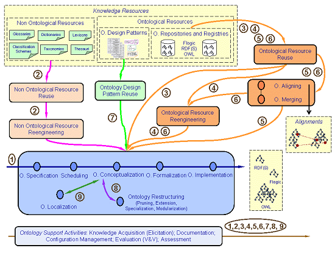

")
")
La Metodología NeOn
La Metodología NeOn para la construcción de redes de ontologías es una metodología basada en escenarios que se apoya en los aspectos de colaboración de desarrollo de ontologías y la reutilización, así como en la evolución dinámica de las redes de ontologías en entornos distribuidos. Las claves de la Metodología NeOn son:
- Un conjunto de nueve escenarios para la construcción de ontologías y redes de ontologías, haciendo hincapié en la reutilización de los recursos ontológicos y no ontológicos, la reingeniería y la fusión, y teniendo en cuenta la colaboración y el dinamismo.
- El Glosario de Procesos y Actividades identifica y define aquellos procesos y actividades involucrados en el desarrollo de redes de ontologías.
- Directrices metodológicas para diferentes procesos y actividades del proceso de desarrollo de la ontología de la red, tales como la reutilización y la reingeniería de los recursos ontológicos y no ontológicos, la especificación de los requisitos de la ontología, la localización de la ontología, la programación, etc. Todos los procesos y actividades se describen con (a) una tarjeta llena, (b) un flujo de trabajo, y (c) ejemplos.

Escenario 1: Desde la especificación de la aplicación. La red de ontologías se desarrolla a partir de cero (sin volver a utilizar los recursos existentes). Los desarrolladores deben especificar los requisitos de la ontología (enlace a las directrices). Después de eso, se asesora para llevar a cabo una búsqueda de recursos potenciales para ser reutilizados. A continuación, la actividad de planificación se debe realizar (enlace a las directrices), y los desarrolladores deben seguir el plan.
Escenario 2: La reutilización y reingeniería de los recursos no ontológicosc (NOR). Los desarrolladores deben llevar a cabo el proceso de reutilización NOR para decidir, de acuerdo con los requisitos de la ontología, que NORs pueden ser reutilizados para construir la red de la ontología. A continuación, los NORs seleccionados deben ser volver al proceso de re-ingeniería ontológicas. Las directrices se presentan en el enlace de directrices.
Escenario 3: La reutilización de los recursos ontológicos. Los desarrolladores utilizan recursos ontológicos (ontologías como un conjunto de módulos ontológicos (enlace a las directrices enlace 1, enlace 2), y / o declaraciones ontológicas (enlace a las directrices)) para construir redes de ontologías.
Escenario 4: La reutilización y re-ingeniería de los recursos ontológicos. Los desarrolladores de ontologías reutilizan los recursos y reorganizar los recursos ontológicos.
Escenario 5: La reutilización y la fusión de los recursos ontológicos. Este escenario se produce cuando varios recursos ontológicos en el mismo dominio que se seleccionan para su reutilización, y los desarrolladores desean crear un nuevo recurso ontológico con los recursos seleccionados. Las directrices se presentan en el enlace de directrices.
Escenario 6: Reutilización, la fusión y re-ingeniería de los recursos ontológicos. Los desarrolladores de ontologías reutilizan, combinan y reorganizan los recursos-ontológicos. Este escenario es similar al Escenario 5, pero en este caso los desarrolladores deciden reorganizar el conjunto de recursos combinados.
Escenario 7: Reutilización de los patrones de diseño de ontologías (ODPs). Los desarrolladores de ontologías acceden a repositorios de reutilización ODPs.
Escenario 8: Reestructuración de recursos ontológicos. Los desarrolladores de ontologías reestructuran (modularizan, podan, extienden y / o especializan) recursos ontológicos que deben integrarse posteriormente en la red de ontologías.
Escenario 9: Localización de recursos ontológicos. Los desarrolladores de ontologías adaptan una ontología a otras lenguas y la cultura las comunidades, obteniendo así una ontología multilingüe. Las directrices se presentan en el enlace de directrices.
Puede encontrar información detallada sobre la Metodología NeOn en http://oa.upm.es/3879/

Created under Creative Commons License - 2015 OEG.